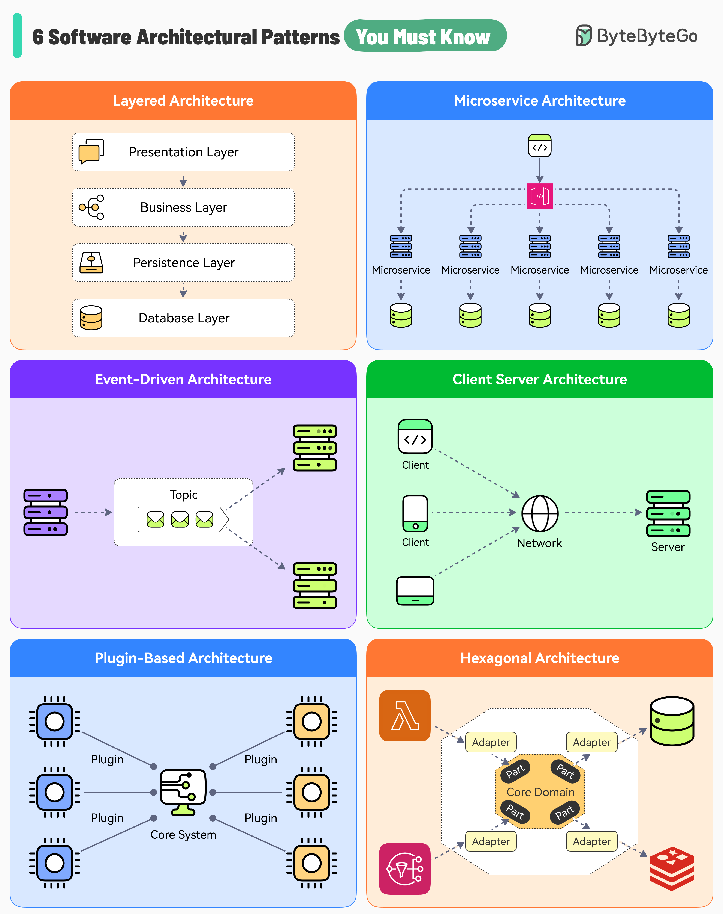

Choosing the right software architecture pattern is essential for solving problems efficiently.
Each layer plays a distinct and clear role within the application context.
Great for applications that need to be built quickly. On the downside, source code can become unorganized if proper rules aren’t followed.
Break down a large system into smaller and more manageable components.
Systems built with microservices architecture are fault tolerant. Also, each component can be scaled individually. On the downside, it might increase the complexity of the application.
Services talk to each other by emitting events that other services may or may not consume.
This style promotes loose coupling between components. However, testing individual components becomes challenging.
It comprises two main components - clients and servers communicating over a network.
Great for real-time services. However, servers can become a single point of failure.
This pattern consists of two types of components - a core system and plugins. The plugin modules are independent components providing a specialized functionality.
Great for applications that have to be expanded over time like IDEs. However, changing the core is difficult.
This pattern creates an abstraction layer that protects the core of an application and isolates it from external integrations for better modularity. Also known as ports and adapters architecture.
On the downside, this pattern can lead to increased development time and learning curve.